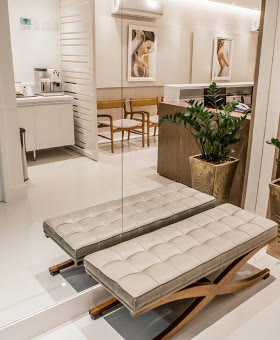

Cirurgião plástico · CRM-BA 14314 · RQE 6888
Cirurgia plástica dedicada às mamas.
O Dr. Cláudio Matsumoto concentra sua atuação na cirurgia plástica das mamas: prótese de silicone, mastopexia e mamoplastia, com a técnica definida para cada paciente.

Técnicas
Cada mama pede uma técnica. O plano é feito para você.
A indicação é definida em consulta, depois da avaliação do tórax, da pele e do que a paciente deseja. Estas são as técnicas que fazem parte da rotina do Dr. Cláudio.
Prótese de silicone 01
Além da estética, considera a manutenção do formato da mama ao longo do tempo.
Técnicas e materiais que buscam uma recuperação mais rápida e confortável.
Mastopexia 02
Para mamas com flacidez, pele flácida e aréolas caídas, frequentemente com prótese de silicone.
Técnica de suspensão da mama em casos de flacidez, combinada com prótese.
Além da cobertura do plano dual plane, usa uma faixa de musculatura lateral para reforçar a sustentação da prótese.
Mamoplastia 03
Para mamas pesadas e desproporcionais, que afetam a postura, o conforto, as roupas e os exercícios.
Combina técnicas na mesma cirurgia, conforme o caso.
Para quem já fez cirurgia de mama e precisa de uma nova intervenção.
Conjunto de cuidados identificado em estudos científicos, seguido na cirurgia de prótese para reduzir complicações.
O conceito de clivagem dá atenção especial ao colo da mama durante a cirurgia de prótese.
A clínica
“Idealizei a clínica como um espaço aconchegante, para que minhas pacientes tivessem bem-estar e tranquilidade antes, durante e depois das cirurgias.”
Dr. Cláudio Matsumoto, sobre a Clínica Corpores




Quem é
Dr. Cláudio Matsumoto
“Hoje, concentro minha atuação nesta área apaixonante: as mamas.”
Com mais de duas décadas de experiência e mais de 4.500 cirurgias realizadas, o Dr. Cláudio se dedica a estudar e aplicar técnicas atuais de cirurgia plástica das mamas. As cirurgias são feitas em hospitais de referência de Salvador.
- CRM-BA 14314RQE 6888 · Cirurgia Plástica
- Clínica CorporesCaminho das Árvores, Salvador
- ConsultasNo consultório e online
- FocoCirurgia plástica das mamas
Avaliações no Google
O que as pacientes contam.
139 avaliações públicas
no Google
Desde a primeira consulta, me senti acolhida, ouviu minhas expectativas com atenção e transmitiu muita segurança. No pós-operatório, o acompanhamento também tem sido cuidadoso e atencioso.
Muito pontual, extremamente atencioso, passa uma confiança surreal quando está explicando cada procedimento, tipo de prótese, método da cirurgia. Você se sente acolhido de verdade!
Um cirurgião extremamente competente, criterioso e cuidadoso em cada detalhe. Sua abordagem é sempre segura, ética e baseada em excelência técnica.
Além de extremamente técnico, com excelência em conhecimento e formação, ele foi atencioso comigo em todo o processo.
Contato
Clínica Corpores, Caminho das Árvores.
Av. Antônio Carlos Magalhães, 3244 · salas 1018/1019Caminho das Árvores · Salvador · BA
Dúvidas frequentes
Antes da consulta
Como é definida a técnica e a prótese?
Em consulta, depois da avaliação individual das mamas, do tórax e da pele, e da conversa sobre o que a paciente deseja. O formato e o tamanho da prótese são escolhidos junto com ela.
Posso fazer a primeira consulta online?
Sim. O Dr. Cláudio atende no consultório e também online. Fale com a equipe pelo WhatsApp para ver a melhor opção.
Onde são feitas as cirurgias?
Em hospitais de referência de Salvador, escolhidos para cada procedimento.
Como agendar?
Pelo WhatsApp (71) 99122-4043 ou pelo telefone (71) 3015-8002, de segunda a sexta, das 8h às 18h.
Agende sua consulta com o Dr. Cláudio Matsumoto.
No consultório, no Caminho das Árvores, ou online.